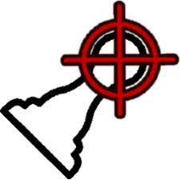

Tournois divers
Participe aux qualifications en ligne, viens disputer les (demi-)finales IRL !
Tournoi : FPS Chess
Inscriptions :
Du 16 Mars à 18h au 17 Mars à 23h59
(Envoie un message à @LaClimSx sur Telegram.)
Qualifications en ligne :
Du 18 Mars à 00h00 au 30 Mars à 23h59
Demi-finales et finales en présentiel :
Vendredi 31 Mars à 17h00 en BC01
Règles générales
- Les rencontres sont gérées par les joueur.euse.s.
- À la fin de chaque rencontre, veuillez reporter l'issue de la partie sur le formulaire ci-dessous.
- En cas de litige, si aucune preuve n'est apportée (e.g., une capture d'écran), les deux joueur·euse·s seront éliminé·e·s.
- En cas de non-respect du délai imposé pour un match, le vainqueur sera désigné par tirage au sort afin de ne pas pénaliser les autres participants.
Règles spécifiques au jeu
- Un match est constitué d'une partie avec les blancs et une partie avec les noirs.
- L'égalité est une issue possible d'un match, si les deux joueurs ont gagné une partie. Cela signifie qu'aucun joueur ne gagne de point. Sinon, une victoire octroie 1 point et une défaite 0.
- L'intégralité des affrontements à l'exception de la finale se termine lorsque l'un des deux joueurs atteint 2 points (qui est donc vainqueur), et se joue avec les pièces normales. La finale (qui aura lieu en présentiel) sera elle terminée au premier joueur atteignant 3 points, et se jouera avec les pièces brillantes.
- Le joueur qui commence avec les blancs est indiqué par la lettre à côté de son nom sur l'arbre de participation, sachant qu'ils intervertissent à chaque match.
Exemple de déroulement d'un affrontement
Imaginons que J1 affronte J2, et que J1 a la lettre B à côté de son nom dans l'arbre de participation :
Les deux joueurs se contactent et fixent un créneau horaire pour jouer leurs matchs. Au moment venu, J1 crée un serveur sur FPS Chess avec le mot de passe de son choix, et J2 le rejoint. Les deux joueurs finissent leur partie, imaginons que J1 gagne, puis J2 crée à son tour un serveur que J1 rejoint, puisque c'est à J2 de commencer. Si J2 gagne, alors il y a égalité et le score reste 0-0. Si J1 gagne, alors J1 a gagné le match 1-0.
Pour le deuxième match, c'est à J2 de commencer (puisque le joueur commençant avec les blancs alterne à chaque match) mais le principe reste le même. Pour les éventuels matchs suivants, c'est à J1 de commencer, puis J2, puis J1, etc jusqu'à ce que l'un des deux joueurs atteigne 2 points.
À l'issue du match, J1 et J2 remplissent le formulaire ci-dessous pour reporter le résultat de leur match.
Foire Aux Questions
Générales
- Puis-je obtenir une extension de délai pour mon match ?
-
Il est préférable de respecter les délais, mais s'il vous est impossible de disputer votre rencontre vous pouvez contacter @LaClimSx sur Telegram.
- Comment faire si mon adversaire conteste ma victoire ?
-
Comme mentionné dans les règles, en cas de conflit, si aucun joueur ne peut apporter de preuve de sa version, les deux joueurs seront éliminés. Nous vous conseillons donc de prendre une capture d'écran du résultat pour prévenir ce problème.
Spécifiques au jeu
- Comment faire en cas de bug de l'un des joueurs ?
-
Nous avons remarqué que le jeu avait tendance à buguer, notamment à empêcher l'un des adversaire de jouer un coup. Si cela vous arrive, recommencer la partie à zéro en refaisant les mêmes coups et en effectuant les mêmes échanges jusqu'à revenir à la situation d'avant. Nous avons conscience que cette méthode est fastidieuse, néanmoins c'est la plus équitable que nous ayons trouvé.